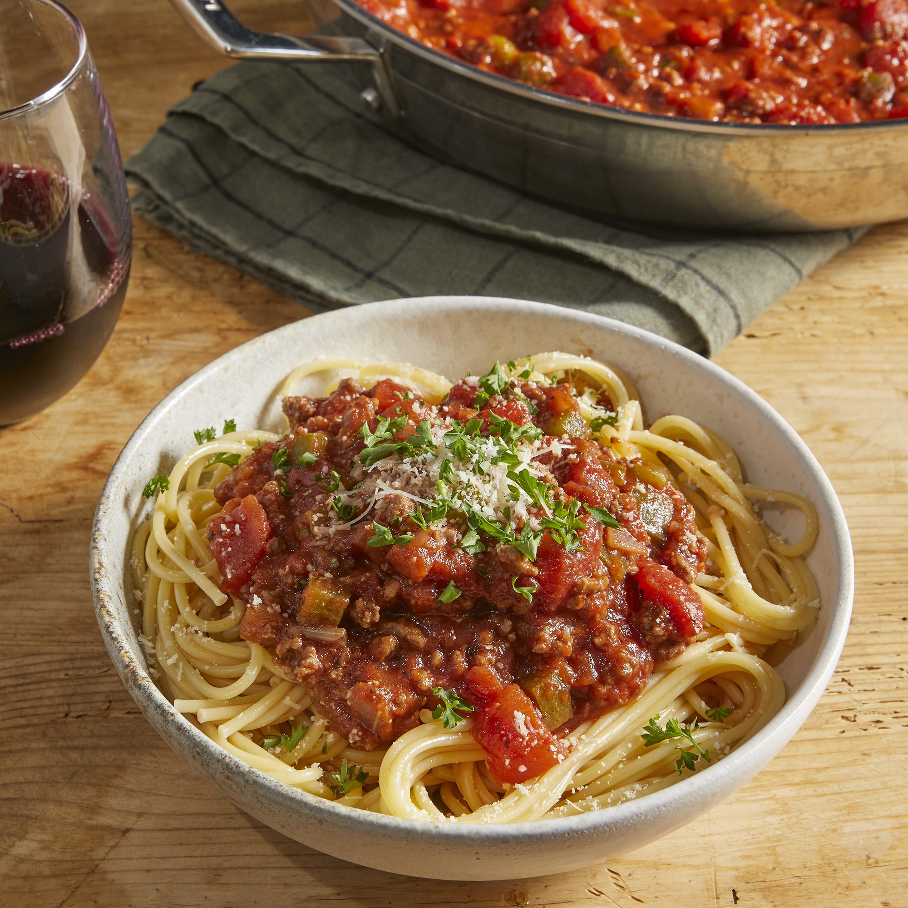

Home Page
Spaghetti Sauce with Ground Beef

Description:
This recipe has been handed down from my mother. It is a family favorite
and will not be replaced! (Definite husband pleaser!) Serve over any
variety of hot cooked pasta.
Ingredients:
- 1 pound ground beef
- 1 medium onion, chopped
- 4 cloves garlic, minced
- 1 small green bell pepper, diced
- 1 (28 ounce) can diced tomatoes
- 1 (16 ounce) can tomato sauce
- 1 (6 ounce) can tomato paste
- 2 teaspoons dried oregano
- 2 teaspoons dried basil
- 1 teaspoon salt
- ½ teaspoon ground black pepper
Steps:
-
- Step
-
Combine ground beef, onion, garlic, and green pepper in a large
saucepan over medium-high heat. Cook and stir until meat is browned
and crumbly and vegetables are tender, 5 to 7 minutes. Drain grease.
-
- Step
-
Stir diced tomatoes, tomato sauce, and tomato paste into the pan.
Season with oregano, basil, salt, and pepper. Simmer spaghetti sauce
for 1 hour, stirring occasionally.
Credits:
Hank's Mom
for publishing this recipe at
all recipes